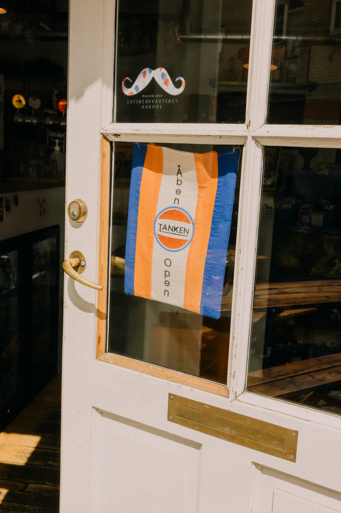

Tanken bag
Vi er tre venner - Tobias, Frederik og Morten, som sammen driver Tanken.
Gennem årene har vi drømt om at starte noget nyt op sammen – et unikt koncept. Efter mange overvejelser opstod idéen ‘Tanken’, som hverken er en café, butik eller typisk bar, men snarere en god blanding af det hele. Vi startede op i Aarhus som heldigvis tog godt imod konceptet, og vi har nu også en kiosk på Guldbergsgade i København.
Tanken byder på alt lige fra filterkaffe, flaskeøl, udvalgte specialøl til BMO, pizza og gode gammeldags mælkesnitter. Hos Tanken hylder vi de lokale råvarer. Vores kaffe er eksempelvis fra Clever Coffee i Odder, og vores vine kommer fra Fifty Nine Wine i Grønnegade.